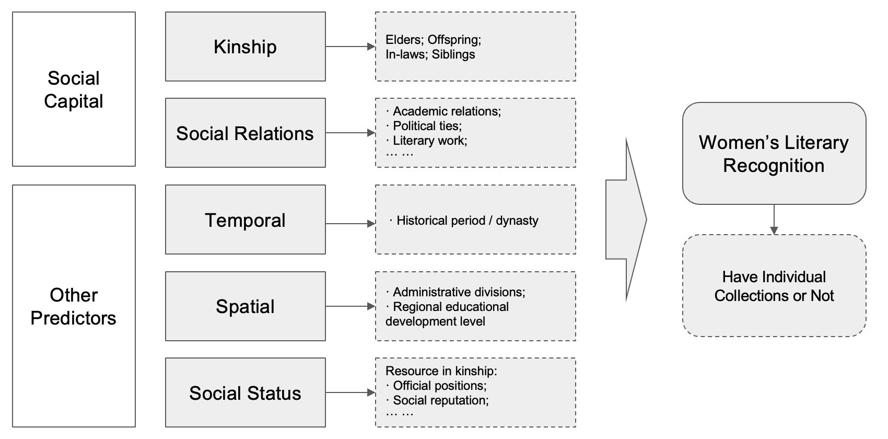

TableGrob (1 x 2) "arrange": 2 grobs
z cells name grob
1 1 (1-1,1-1) arrange gtable[layout]
2 2 (1-1,2-2) arrange gtable[layout]
How Women Poets Claimed Literary Recognition in Imperial China
Female writers in both ancient China and the West faced significant social and economic challenges that hindered their establishment in the literary world. Support from male relatives and friends became crucial for creating and sharing their work, with numerous studies highlighting the impact of these relationships in a male-dominated landscape. Additionally, social networks were vital for women to gain literary recognition, as they often relied on support from husbands, family members, and friends to enhance their visibility in the literary community. This project aims to clarify how social capital influenced women’s literary achievements and recognition in ancient China.
This project will examine how social networks, especially connections with male elites, influenced women’s literary status and their opportunities for having individual collections (Bieji 别集) published in ancient China. This topic carries profound implications for understanding:
Two primary databases were utilized in this study, both of which are focused on historical figures from ancient China. The China Biographical Database (CBDB) is a freely accessible relational database with biographical information about 641,568 individuals as of August 2024, primarily from the 7th through 19th centuries [@cbdb]. The total size of the database is 1.9 GB, which includes 87 different data tables stored in the db file. Ming Qing Women’s Writing (MQWW) is a comprehensive database, totaling 23.5 MB, featuring poetry and writings by women from late imperial to modern China. This archive enables users to match women authors with CBDB for detailed demographic and social network information. These two datasets include numerous tables, necessitating complex SQL queries to clean and extract the information relevant to this study.
Using a three-step approach with the LASSO model, I aimed to identify the causal effect of social capital on women poets’ literary recognition. The findings indicate that the connections with male elites indeed influenced women’s literary status. However, only social relation networks influence the literary recognition of women poets, while the effect of kinship network centrality was found to be non-significant.
My response variable to measure women’s literary recognition is whether women poets have published their own individual collections (Bieji/別集). Anthologies (Zongji/總集, including all of other worktypes) typically include works that are representative or influential, but they do not fully reflect the complete body of work and value of an individual author. In contrast, individual collections better showcase the personal creative characteristics and literary styles of a specific writer, and can better demonstrate their unique literary achievements.
Compared to anthologies, which tend to reflect the mainstream evaluation standards of the literary community at the time and are often biased towards male perspectives, the curation of individual collections is more likely to focus on the personal writings of women authors, highlighting their unique perspectives and modes of expression. This makes individual collections more conducive to the objective assessment of the status of women’s literary works.
Therefore, if a woman poet has published at least one individual collection (Bieji > 0), I will conclude that her literary status has been recognized.
\[ Y = I (Bieji > 0) \]
Where:
The plot (Figure 1) on the right illustrates that while most women poets have published anthologies, only 27% have produced individual collections, highlighting a significant disparity in literary recognition.
TableGrob (1 x 2) "arrange": 2 grobs
z cells name grob
1 1 (1-1,1-1) arrange gtable[layout]
2 2 (1-1,2-2) arrange gtable[layout]
The analytical framework of this study is as follows (Figure 2). The primary predictor is social capital, which is divided into two components: kinship and social relations. Kinship focuses on social capital based on blood relations, while social relations focus on non-kinship and non-inherited social capital. In addition to these primary predictors, the study will also control for other major variables that may potentially influence the outcome variable (women’s literary recognition). The measurement approaches for these other variables will be detailed in the subsequent sections.

In addition to social capital, other predictors are also controlled for in our model. Regarding the temporal dimension, the distribution of women poets spans different historical periods, from the Eastern Han to the Qing Dynasty. Since different dynasties may exert varying influences, the dynasty is considered an important variable. As shown in Figure 7, most of the observations (~87%) were born during the Qing Dynasty, followed by the Tang Dynasty (~5%).
In terms of the spatial dimension, I accounted for the administrative provinces of the women poets’ birthplaces. As illustrated in the plot (Figure 8), some provinces had significantly more women poets than others, which can be attributed to the structural mechanisms within those regions.
Additionally, I controlled for local education levels by examining the number of successful candidates (also known as palace graduates) in the imperial examination (jinshi 進士 / juren 舉人 / jieyuan 解元) within a 50 km radius of the women poets’ birthplaces, which is roughly equivalent to the same administrative region. A higher number of local palace graduates can be interpreted as an indication of more advanced education in that area. The spatial distribution of palace graduates’ birthplaces is shown in Figure 9.
TableGrob (1 x 2) "arrange": 2 grobs
z cells name grob
1 1 (1-1,1-1) arrange gtable[layout]
2 2 (1-1,2-2) arrange gtable[layout]TableGrob (1 x 2) "arrange": 2 grobs
z cells name grob
1 1 (1-1,1-1) arrange gtable[layout]
2 2 (1-1,2-2) arrange gtable[layout]In assessing social status, I consider the highest social status attained by the family members of women poets. This approach is justified for two primary reasons: First, women in ancient China had limited opportunities to acquire social resources, as their status was often linked to their family members, particularly male relatives (未嫁从父/出嫁从夫/夫死从子). Second, the highest social status of family members serves as an indicative measure of the resources that women poets could potentially access.
The detailed measurement involves identifying family members based on the following criteria: 1. whether they have been recorded biographically as core figures; 2. whether they held the status of palace graduates; 3. whether they held official positions; 4. whether they received official honors or recognitions; and 5. whether they were distinguished writers or historians (Figure 10).
Given the high-dimensional nature of the data (n = 443, p = 1391), a LASSO model was applied in this study. As the formula illustrates, the lasso imposes a penalty on the absolute size of the coefficients, encouraging sparsity in the model. This penalty helps to mitigate overfitting by selecting a subset of relevant features while effectively shrinking the coefficients of less important predictors to zero. The optimal lambda value was selected through cross-validation based on the AICc criterion.
\[ \hat{\beta}_{\text{LASSO}} = \underset{\beta}{\operatorname{argmin}} \left\{ \sum_{i=1}^{n} (y_i - X_i\beta)^2 + \lambda \sum_{j=1}^{p} |\beta_j| \right\} \]
In the initial LASSO model, all social capital variables were treated as one-hot variables to systematically evaluate the impact of male individuals on women’s literary recognition. The results of this initial LASSO model are illustrated in Figure 11. The findings present several important observations:
A considerable number of individuals within both kinship and social relations exert a positive influence on women’s literary recognition. This suggests that the presence and support of male family members and social contacts play a crucial role in enhancing women poets’ visibility and acclaim.
The mean coefficient for kinship (0.438) is significantly larger than that for social relations (0.201), indicating that familial ties may have a more pronounced impact on literary recognition than connections outside the family unit. Specifically, on average, the presence of a kinship connection increases the odds of literary recognition by 55%, while a social connection increases the odds by 22%, holding other variables constant (OR_kinship = 1.55; OR_social = 1.22).
Furthermore, the coefficients for the spatial and temporal variables are also markedly greater than those associated with social relations. This observation underscores the importance of geographical and historical contexts in shaping the literary landscape, suggesting that both the location and timing of a poet’s work are critical factors influencing their recognition.
However, the violin plot reveals a significant dispersion in the effects of social capital, indicating that the impact of different individuals varies greatly within the dataset. This finding suggests that while social capital plays a positive role in women’s literary recognition, it complicates the assessment of its overall influence on women as a group. The next step is to delve deeper into the aggregate impact of social capital on women’s literary achievements.
To measure the centrality effects in networks on women poets, centrality degree metrics were calculated and applied to the model. The measurement of individual relationships may contain more noise; thus, degree serves as an aggregated indicator that can help smooth out these measurement errors to some extent. The existence of effects from aggregated indicators suggests that the network exhibits “wholeness” or “scale effects,” indicating the implications of these aggregated relationships.
Kinship Degree (0.102): This predictor demonstrates a positive but relatively modest influence on women’s literary recognition compared to social relations, which is notably different from the results of the initial model. The coefficient means when kinship degree of women poets increase 1 unit, holding all other variables constant, the odds ratio of their literary status can be recognised will increase by 10.7% (OR = 1.107).
Social Degree (0.223): The coefficient for social degree is higher than that of kinship. This implies that broader social interactions have a more pronounced effect on women’s literary achievements, thereby enhancing their recognition within the literary community. The coefficient indicates that when social degree increases by 1 unit, the Odds Ratio of women poets being literary recognized will increase by 25% (OR = 1.25).
Due to potential correlations among different predictors, it is difficult to assert that the estimated coefficients from the above LASSO model—Kinship Degree (0.102) and Social Degree (0.223)—reflect their true impact on women’s literary status recognition. To obtain a more accurate treatment effect of the social capital degree indicator, I will conduct a double LASSO analysis.
Our empirical strategy employs a Double LASSO procedure that unfolds in two stages. In the first stage, I estimate the treatment equation:
\[ d_i = \gamma'Z_i + v_i \] \[ \hat{d}_i = \hat{\gamma}'Z_i \]
where \(d_i\) denotes the treatment variable (the network degree centrality), \(Z_i\) is a vector of control variables, and \(\gamma\) is estimated using LASSO regression. The predicted values \(\hat{d}_i\) are then obtained using the estimated coefficients.
In the second stage, I estimate the outcome equation:
\[ y_i = \beta d_i + \delta\hat{d}_i + \theta'Z_i + \epsilon_i \]
where \(\beta\) captures the treatment effect of network centrality on the outcome variable, while controlling for both the original treatment \(d_i\) and its prediction \(\hat{d}_i\) from the first stage. The control variables \(Z_i\) are included in both stages, and the treatment variables are left unpenalized in the second stage estimation.
I conducted double LASSO analysis separately for the kinship degree and social degree indicators. Table 3.1 presents the estimation results of the double LASSO regression. The effect of social degree is 0.211, which is quite close to the naive LASSO result of 0.223, while the effect of kinship degree is nearly 0 (significantly lower than the naive LASSO estimate of 0.102). This indicates that the influence of kinship degree can be fully explained by social degree and other predictors.
| Network Type | Naive LASSO | Double LASSO |
|---|---|---|
| Social Degree | 0.223 | 0.211 |
| Kinship Degree | 0.102 | 0.000 |
| Note: | ||
| Estimates from LASSO regressions using gamlr package. | ||
| 1 Treatment variables (d and dhat) were not penalized in the estimation. | ||
| 2 Controls include dynasty, region, and status variables. |
To validate these findings, I conducted a bootstrap analysis with 500 replications (?@fig-double-2). The results indicate that the effect of social connections is statistically significant, with an estimated coefficient of 0.287 (95% CI: [0.086, 0.489]). In contrast, the effect of kinship connections remains statistically insignificant, with an estimate of 0.092 (95% CI: [-0.096, 0.280]). The coefficient from the double LASSO analysis suggests that when the social degree of women poets increases by 1 unit, holding all other variables constant, the odds ratio for their literary recognition increases by 24.9% (OR = 1.249). Conversely, the coefficient for kinship degree does not show significant influence on women’s literary recognition. These bootstrap results further support our main findings that social connections, rather than kinship ties, play a more crucial role in determining career success.
| Network Type | Estimate | Std. Error | 95% CI |
|---|---|---|---|
| Social Degree | 0.287 | 0.103 | [0.086, 0.489] |
| Kinship Degree | 0.092 | 0.096 | [-0.096, 0.280] |
| Note: | |||
| Based on 500 bootstrap replications | |||
| 1 Parallel processing using all available cores | |||
| 2 Bootstrap samples with replacement |
To estimate the effect of female-male social capital on the literary recognition of women poets, this research implemented a three-step approach.
First, a comprehensive network comprising numerous male individuals was analyzed using a LASSO model while controlling for other predictors. The results indicate that many male individuals positively impact the literary recognition of women poets, with the mean coefficient for kinship being significantly larger than that of social relations (kinship 0.436 > social 0.201). Second, in measuring the network centrality effect, aggregated metrics, specifically the network degree, were utilized in the LASSO model instead of individual metrics. This analysis yielded a contrasting result; the centrality of social relation networks exhibited a greater influence on kinship network centrality (social 0.223 > kinship 0.102). Finally, to eliminate the mutual impact of each variable and isolate the pure effect of social capital, a double LASSO model was deployed. The bootstrapping results demonstrated that social relation network centrality has a significantly positive impact on the literary recognition of women poets (social 0.287, OR = 1.249), whereas the effect of kinship network centrality proved to be non-significant. This suggests that only social relation networks influence the literary recognition of women poets.
The findings indicate that social connections (non-kinship) are more important for female literary figures than familial ties. This suggests that the recognition of literary achievements relies more heavily on actively established social circles than on inherent family relationships. Social networks may provide women with essential channels for disseminating their work, opportunities for literary exchange, and sources of creative inspiration. Although Chinese traditional perspectives suggest that women should prioritize family, the results of this study highlight that social connections that transcend familial boundaries are paramount for their success.
However, there are several points for improvement in the analysis.
The quality of the data is limited. Although the MQWW Database comprises over 6,000 observations, there is no key column available to facilitate merging with the CBDB Database. The data can only be merged based on the name column; however, many women in ancient China did not possess their own names, even if they were writers. This reliance on names leads to messy and often inaccurate artificial data cleaning, resulting in fewer than 500 usable observations after filtering. Additionally, I believe that the quality of the poets’ works should be considered the most significant variable influencing their literary recognition. However, measuring this quality is particularly challenging. The absence of this variable may introduce an omitted variable bias, potentially affecting the final results. In future research, applying a Chinese segmentation approach could help better assess the quality or themes of the poets’ works, providing a clearer insight into their literary recognition.
I would like to conclude my project with a poem attributed to ‘周氏/Zhou Shi’ (a woman married to a man with the surname Zhou). I noticed these poets while reviewing my data. As I mentioned, many women poets were recorded without their own names, even though they created brilliant poetry. In this poem, she praises the plum blossoms that bloom in the cold winter and believes that, like the blossoms, she possesses a resilient character.